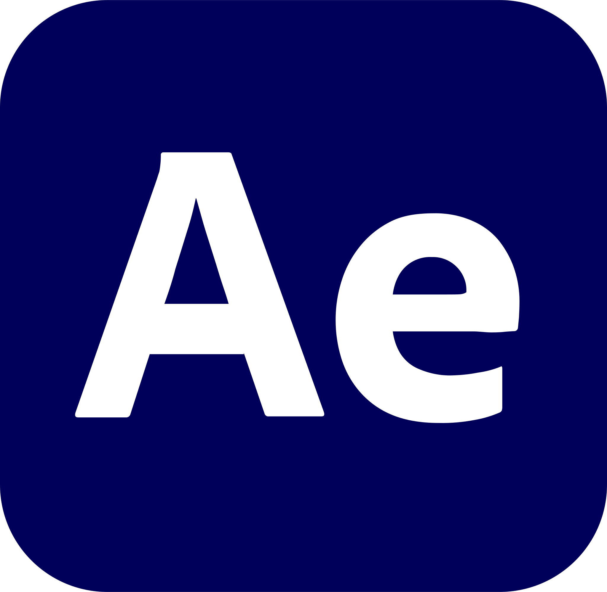

Entirely designed by me
Yassen Elkhatib
About me
I'm Yassen Elkhatib — as you saw on this site. I didn't want this to be just another website like a hundred others — I set out to build you an experience worth remembering. For you to actually enjoy it — that's what I aim for in every video I design, in the sound and colors I pick, and in every element that lifts a video from ordinary into something professional and distinctive. Through my modest experience with clients, my highest goal stays the same: their comfort and their trust. I've worked solo and on teams, and both taught me how to deal with different people and different elements, and how to deliver the best video possible. Thank you.
Experience
Skills

After EffectsPremiere
Photoshop
 Illustrator
IllustratorBlender
CapCut
 Canva
CanvaLet's build something together